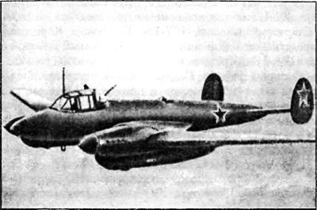
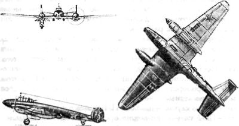

Реактивные бомбардировщики «Пе-2»
Конечно, Королев понимал, что до реализации проекта «РП» в полном объеме еще очень далеко. Потому в качестве первого этапа он рассматривал возможность создания экспериментального ракетоплана на основе пикирующего бомбардировщика «Пе-2».
В реализации этой идеи Королеву помог генеральный конструктор завода, выпускавшего «Пе-2», — Владимир Михайлович Мясищев.
Подробнее о начале и первых результатах работы по модернизации «Пе-2» можно узнать из докладной записки Королева начальнику Спецотдела НКВД СССР:
«…Прибыв 19/XI — 1942 г. в Казань, — пишет Сергей Павлович, — я имел задание ознакомиться с работами, ведущимися по реактивным двигателям.
ОКБ завода № 16 работало над созданием четырехкамерного реактивного двигателя РД-1 с тягой 1200 кг на жидком топливе с питанием от автономно действующего турбонасосного агрегата для самолетов.
Эта работа была построена таким образом, что вначале отрабатывалась секция РД-1 в виде одной камеры с тягой 300 кг и системой питания от постороннего источника энергии (на стенде — от электромотора).
Объем всей работы по РД-1 достаточно велик и технически труден и потому первый ее этап — однокамерный двигатель с приводом являлся наиболее реальным и близким к осуществлению.
Одновременно простейшие подсчеты показали, что целесообразна установка однокамерного РД-1 тягой 300 кг в качестве вспомогательного двигателя на самолет Пе-2 с приводом от мотора М-105.
В этой постановке становилась реальной не только задача в кратчайший срок испытать и отработать РД-1 в воздухе, но и самолет с реактивной установкой приобретал летные данные, могущие представить самостоятельный интерес для боевого применения. Несомненно также, что опыт установки реактивного двигателя на самолете в качестве вспомогательного двигателя должен послужить надежной базой для создания в будущем чисто ракетного самолета».
Все расчетно-проектные работы по оснащению «Пе-2» реактивной установкой «РУ-1» заняли у группы Королева четыре месяца. Всесторонний анализ проекта показал, что модернизация бомбардировщика заметно улучшит его характеристики.
Поскольку двигатель требовал 90 килограммов топлива в минуту, то 900 килограммов топлива, запасенных на борту самолета, обеспечивали двигателю десятиминутную работу. За счет реактивной тяги скорость «Пе-2» в полете должна была возрасти на высоте 7 километров на 108 км/ч. Как видим, прибавка весьма солидная, и достигалась она за 80-100 секунд. Причем увеличивать скорость полета можно было в любой момент простым включением рубильника в кабине летчика. Расчет также подтвердил, что чем больше высота, тем эффективнее «РУ-1».
Но не только в увеличении скорости полета заключался смысл реактивной установки. В случае необходимости она могла помочь сократить взлетный разбег «Пе-2» на 70 метров.
«Вертикальная скорость при отрыве от земли с включенной РУ-1 возрастает на 30 процентов и соответственно увеличивает возможный угол набора высоты, — писал Королев, — что важно при взлете с аэродрома, ограниченного препятствиями».
Окончательный расчет самолета с дополнительным реактивным двигателем Сергей Павлович утвердил 24 мая 1943 года. Во введении он писал:
«Необходимо отметить, что РУ-1 является совершенно новым техническим агрегатом, впервые осуществленным на самолете с целью испытания и отработки реактивного двигателя в летных условиях».
Подготовка самолета и изготовление всех частей «РУ-1» велись быстрыми темпами. Уже в том же 1943 году на одном из заводских аэродромов можно было видеть внешне почти обычный «Пе-2», но стоявший отдельно от своих собратьев и время от времени (когда подходил срок огневых испытаний) громко гудевший и извергавший огненную струю из сопла, помещенного в его хвостовой части. Самолет этот значился в документах под номером 15/185.
В техническом описании, составленном Королевым специально для заводских испытаний первенца, говорилось, что «для грамотной эксплуатации РУ-1 требуется тщательное, глубокое изучение конструкции ее агрегатов и систем, строгое соблюдение всех правил обращения с ними». Экипаж самолета состоял из трех человек: летчика, инженера-экспериментатора на месте штурмана и еще одного инженера на месте стрелка-радиста.
В инструкции четко определялось все, что надо делать при подготовке опытной машины к полетам.
«Любые отступления от установленных правил допустимы лишь с письменного разрешения главного конструктора РУ-1», — предупреждал Королев.
Для проведения заводских испытаний «Пе-2» с реактивным двигателем была создана комиссия. В нее вошли конструктор двигателя Валентин Глушко и автор реактивной установки Сергей Королев. Пилотировал экспериментальный самолет летчик-испытатель Васильченко. Королев также был включен в летный экипаж в качестве инженера-экспериментатора.
Испытания в воздухе проводились по широкой программе. Первый полет предназначался для пробного включения и рассчитывался на 30 минут. Потом предстояли шесть полетов общей продолжительностью в четыре с половиной часа для включения РУ в режиме максимальной скорости на высоте 2,5, 5 и 7 километров. После этих испытаний экипажу нужно было готовиться к полетам при двукратном включении ракетного двигателя и на максимальной скорости. Планировалось два таких полета. Далее в программе значились полеты с двумя запусками ракетного двигателя на малой высоте, у земли. Затем следовали три полета с включением «РУ-1» на взлете, еще два в режиме набора высоты. Всего планировалось шестнадцать полетов. В действительности же программа испытаний сильно разрослась и заняла почти два года
Первый раз самолет «Пе-2» с включенным ЖРД взлетел 1 октября 1943 года. Ракетный двигатель работал 2 минуты, и его выключили, когда самолет вошел в облака. К моменту остановки давление в камере сгорания возросло до 2030 атмосфер, а скорость полета увеличилась на 92 километра в час.
Через день — повторный полет. Ракетный двигатель включили на скорости 365 километров в час, и он работал 3 минуты. После этого обороты моторов увеличили, и ЖРД тянул еще минуту. И опять все оборудование после полета оказалось полностью в исправности.
Ощущения пилота при включении «РУ-1» описаны в отчете:
«В первые секунды создавался небольшой кабрирующий момент и ощущалось ускорение. Возникало давление на штурвал, которое легко устранялось летчиком. Условия пилотирования не ухудшались».
4 октября 1943 года экипаж шесть раз поднимался с бетонной полосы при включенной реактивной установке. Она работала каждый раз по минуте и каждый раз сокращала длину разбега. Затем начались систематические полеты, продолжавшиеся до мая 1945 года. РД включался десятки раз на разных высотах и на максимальных скоростях.
В течение всех испытаний Сергей Королев, как правило, непосредственно находился на борту летающей реактивной лаборатории. Поначалу РУ преподносила экипажу сюрпризы. Так, в одном из полетов вышла из строя газовая трубка на высоте 2500 метров, в другой раз упало давление в камере сгорания, а как-то двигатель даже самовыключился.
Всего на «Пе-2» было совершено 110 полетов, в том числе 29 с включенной реактивной установкой. Четырнадцать раз экипаж поднимался для отладки оборудования, 67 полетов было выполнено для отработки зажигания. Эта последняя задача в первоначальной программе испытаний не значилась, но потребовала львиной доли летного времени. Дело в том, что поначалу пусковая смесь зажигалась с помощью электрической свечи накаливания. Но свеча работала неустойчиво, особенно на больших высотах. Тогда Валентин Глушко разработал систему химического зажигания двигателя (ХЗ) и название двигателя соответственно изменилось на «РД-1ХЗ». Эту систему опробовали, а затем доводили в многочисленных полетах.
«Двигатель РД-1 с химическим зажиганием, — отмечалось в отчете об испытаниях, — надежен на земле и в воздухе. Допускает повторные включения, число которых зависит от запаса пусковой самовоспламеняющейся жидкости».
Задолго до завершения испытаний стало ясно: надежды конструкторов оправдываются. В начале 1944 года Сергей Павлович записал: «Испытания показывают, что двигатель РД и реактивная установка в целом работают нормально. Хорошо совпадают экспериментальные и расчетные данные. Таким образом, в настоящее время имеется опробованная в воздухе материальная часть вспомогательного двигателя и реактивной установки Пе-2».
Среди документов периода войны есть заключение по реактивной установке Сергея Королева, подписанное известным авиаконструктором Владимиром Мясищевым и директорами заводов: «Считать целесообразным предъявить реактивную установку с двигателями РД-1ХЗ на самолете Пе-2 № 15/185 на испытания совместно с представителями ВВС КА по согласованной программе».


Однако Королев не собирался останавливаться на достигнутом. Для него летные испытания бомбардировщика «Пе-2» с реактивной установкой (его еще называли «Пе-2РУ») были лишь завершением первого этапа работы. Он считал, что теперь настало время наметить ее дальнейшее развитие, и предлагает три направления, или, как он пишет, три варианта.
Вариант ускорителя, «РУ-1у» для самолета «Пе-2», бомбардировщика или разведчика, с целью улучшить его летные данные. В основу при этом кладется существующая установка «РУ-1» с изменениями, необходимыми для запуска в серию.
Вариант высотный, «РУ-1в». Он, как пишет Сергей Павлович, «…представляет собою реактивную установку с двумя камерами РД-1 с тягой 600 кг, установленную на самолете Пе-2 с мотором М-82 и ТК, специально приспособленным как одноместный истребитель для выполнения высотных полетов с герметической кабиной и мощным стрелковым вооружением. Зона работы такой машины на высоте 13–15 км при скоростях около 760 км/час. При этой работе используются основные агрегаты и устройства существующей уст-ки РУ-1, а общая компоновка производится заново».
Стартовый вариант, «РУ-1с». По мысли Королева, он «…представляет собой типовую секцию с одной камерой сгорания РД-1 и агрегатами запуска, с запасом топлива на 20–30 секунд работы. Подача топлива осуществляется без помощи каких-либо насосов и приводов, а под давлением сжатого воздуха, размещаемого в той же конструкции. Устанавливая нужное количество таких стартовых секций РУ (2, 4, 6 шт. и т. д.), можно сообщить самолету дополнительную тягу на взлете 600, 1200, 1800 кг.
Продолжительность действия РУ 20–30 секунд (и более) обеспечивает проходимость перегруженной машины над препятствиями. Стартовая РУ после взлета может быть сброшена на парашюте.
Для самолета Пе-2 четыре секции РУ на старте позволят увеличить бомбовую нагрузку на 200 % против нормального варианта нагрузки, а дальность увеличится на 800 км при средней величине разбега».
Среди других усовершенствований Королев предлагал также сделать реактивную модификацию бомбардировщика Петлякова «Пе-3», превратив его в высотный истребитель. На «Пе-3» он планировал поставить два реактивных двигателя, чтобы получить от них тягу в 600 килограммов. При этом «Пе-3» приобретал дальность полета около 1000 километров и высокие летные качества.
«В этом случае, — писал С. П. Королев в феврале 1944 года, — Пе-3 на участке догона противника по максимальной скорости становится на уровень новейших истребителей. Значительное увеличение скороподъемности и одновременно высоты боевого применения позволит с успехом использовать Пе-3 для уничтожения самолетов противника, идущих на большой высоте. Запас реактивного топлива на Пе-3 обеспечивает последнему выполнение ряда новых тактических задач».
Перед тем как осуществить идею превращения бомбардировщика «Пе-3» в истребитель, Сергей Павлович проверил ее на самолете «Пе-2» с моторами «М-82». Среди документов военных лет хранится полный расчет высотного истребителя на базе бомбардировщика за счет добавления двух ракетных двигателей. Схема его действия описывалась Королевым так:
«Самолет поднимается на бензиновых моторах до высоты 9000-11000 метров и совершает горизонтальный полет. При обнаружении летящего выше противника летчик переводит поршневые моторы на режим полного газа, включает реактивные двигатели РД-Д на полную тягу и в короткое время набирает нужную высоту. Далее, если необходимо догнать самолет противника, то дальнейший полет по горизонтали на «площадке» происходит при полной тяге РД-1 (на Н = 15000 м и V = 785 км/час). Если же нужно продержаться на большой высоте, то это происходит на минимально потребной тяге и крейсерских режимах (V=500–660 км/час)».
Цифры, названные Королевым, не могли не поразить воображение: высота полета 15 километров (!), скорость — 785 км/ч. И это в то время, когда у лучшего истребителя Третьего рейха максимальная скорость на высоте 5 километров составляла 584 км/ч, а у нашего «Як-3» — 648 км/ч. А практический потолок бомбардировщиков тех лет был всего 7 километров,
И эта модификация была продумана и просчитана Королевым до деталей. Что же предусматривал этот проект? На «Пе-2» устанавливались два дополнительных турбокомпрессора, чтобы повышать давление воздуха, поступающего в моторы в условиях разряжения на большой высоте. Кабины штурмана и летчика заменялись одной герметической кабиной. Самолет максимально облегчался, снимались бомбовая нагрузка, часть горючего, оборудования и вооружения. Экипаж сокращался с трех человек до одного. Летчику-истребителю оставлялись две пушки калибром 20 миллиметров, располагавшиеся пол бомбовым отсеком. На самолете монтировалась мощная реактивная установка с двумя ЖРД и запасом реактивного топлива в 2100 килограммов.
Сама реактивная установка состояла из двух однокамерных ракетных двигателей, специальных приводов для вращения насосных агрегатов, кислотной и керосиновой систем и системы дренажирования, пусковой и электрической систем.
Сергей Павлович рассчитал два варианта размещения камер сгорания и автоматики для управления их работой. Первый вариант уже был опробован в полетах на первом самолете «Пе-2РУ». По этому варианту агрегаты «РД-1» устанавливались в хвосте. По второму варианту камера сгорания и автоматика помещались в задней части мотогондол. В этом случае получалась меньше длина кислотных трубопроводов высокого давления. Да и все оборудование размещалось более компактно, доступ к нему был прост и удобен. Но эта схема еще нуждалась в проверке.
«Расчетные данные, — писал Королев, — не дают основания предполагать возникновение в этом случае каких-либо нежелательных явлений, и при подтверждении экспериментом схема будет принята к осуществлению».
Отсеки центроплана, где располагались кислотные баки, герметизировались и снабжались аварийными сливами кислоты за борт на случай течи или прострела. Предусматривалось шесть баков для 1750 килограммов кислоты. Основной бак для керосина помещался в носовой части фюзеляжа, впереди герметической кабины. Общий запас керосина — 350 килограммов. Пуск двигателей осуществлялся нажатием кнопок, а регулирование режима работы — секторами газа.
Как же менялся вес самолета? Герметическая кабина весила 100 килограммов, реактивная установка — 250, реактивное топливо — 2100, турбокомпрессоры — 200 килограммов. Учитывая, что одновременно снималась часть оборудования, полетный вес высотного истребителя (9325 килограммов) был близок к весу бомбардировщика (8500 килограммов).
Таким образом, Сергей Павлович в этом своем проекте от разработки ускорителей для самолетов подошел к решению задачи обеспечения полета, как он говорил, «на высотах, больших винтомоторного потолка самолета при совместной работе бензиновых моторов и реактивных двигателей». Так самолет превращался в настоящий высотный ракетоплан.
Еще одним проектом ракетного самолета, которым занимался Сергей Королев, был модифицированный вариант бомбардировщика «Пе-2И» конструкции Владимира Мясищева.
«Пе-2И» представлял собой весьма радикальную переработку исходной конструкции. Во-первых, он проектировался под новые мощные моторы «М-107А». Во-вторых, крыло получило новый профиль, более подходящий для больших углов атаки. В-третьих, фюзеляж был расширен, чтобы разместить в бомбоотсеке бомбы нового образца — более короткие и толстые. Да и сама бомбовая нагрузка возросла до 3 тонн (против 1 тонны ранее).
Сергей Павлович с большим энтузиазмом взялся за разработку реактивного варианта нового самолета Мясищева.
«По своим боевым данным, — писал Королев, — самолет «И» с реактивной установкой в варианте бомбардировщика и истребителя оставит далеко позади все известные самолеты не только этих классов, но и одноместные истребители. Как бомбардировщик самолет Пе-2И с реактивной установкой будет неуязвим для истребителей с учетом роста их скоростей за период создания серийных машин типа «И». Как истребитель самолет «И», обладая высокими качествами, может быть использован для решения самых разнообразных истребительных задач. Реактивная установка, включаемая в необходимые моменты боя, обеспечивает ему решающее превосходство в воздухе над противником».